Congruent figures are exactly the same in shape and size. In other words, shapes are congruent if one fits exactly over the other.
Examples

Similar figures mathematically have the same shape but different sizes. Two geometrical figures are said to be similar \((\sim)\) if the measures of one to the corresponding measures of the other are in a constant ratio. In other words, every part of a photographic enlargement is similar to the corresponding part of the original.
Examples

Try these
Identify the pairs of figures which are similar and congruent and write the letter pairs.
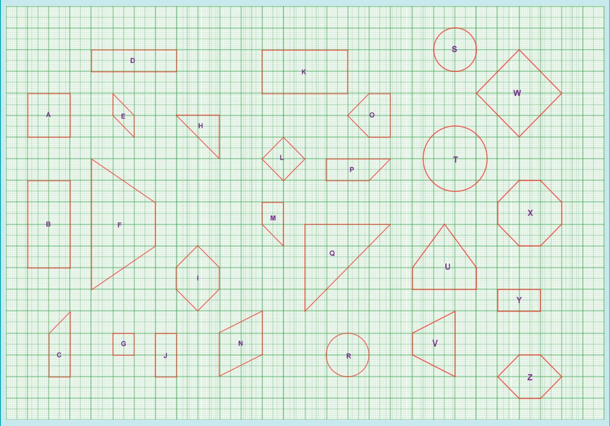
5.2.1 Congruent Triangles
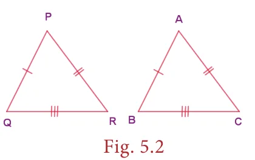
Consider two given triangles PQR and ABC. They are said to be congruent \((\equiv)\) if their corresponding parts are congruent. That is PQ=AB, QR=BC and PR=AC and also \(\angle P = \angle A\), \(\angle Q = \angle B\) and \(\angle R = \angle C\). This is denoted as \(\triangle PQR \equiv \triangle ABC\).
There are 4 ways by which one can prove that two triangles are congruent.
SSS (Side - Side - Side) Congruence
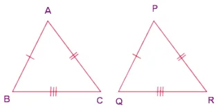
Fig. 5.3 If the three sides of a triangle are congruent to the three sides of another triangle, then the triangles are congruent. That is \(AB = PQ\), \(BC = QR\) and \(AC = PR\)
\(\Rightarrow \triangle ABC \equiv \triangle PQR\).
SAS (Side - Angle - Side) Congruence
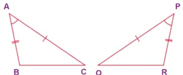
Fig. 5.4 If two sides and the included angle (the angle between them) of a triangle are congruent to two sides and the included angle of another triangle, then the triangles are congruent. Here, \(AC = PQ\), \(\angle A = \angle P\) and \(AB = PR\) and hence \(\triangle ACB \equiv \triangle PQR\).
ASA (Angle-Side-Angle) Congruence

Fig. 5.5 If two angles and the included side of a triangle are congruent to two angles and the included side of another triangle, then the triangles are congruent. Here, \(\angle A = \angle R\), CA=PR and \(\angle C = \angle P\) and hence \(\triangle ABC \equiv \triangle RQP\)
RHS (Right Angle - Hypotenuse - Side) Congruence

Fig. 5.6 If the hypotenuse and a leg of one right triangle are congruent to the hypotenuse and a leg of another right triangle, then the triangles are congruent. Here, \(\angle B = \angle Q = 90^{\circ}\) (right angle), \(BC = QR\) (leg) and \(AC = PR\) (hypotenuse) and hence \(\triangle ABC \equiv \triangle PQR\).
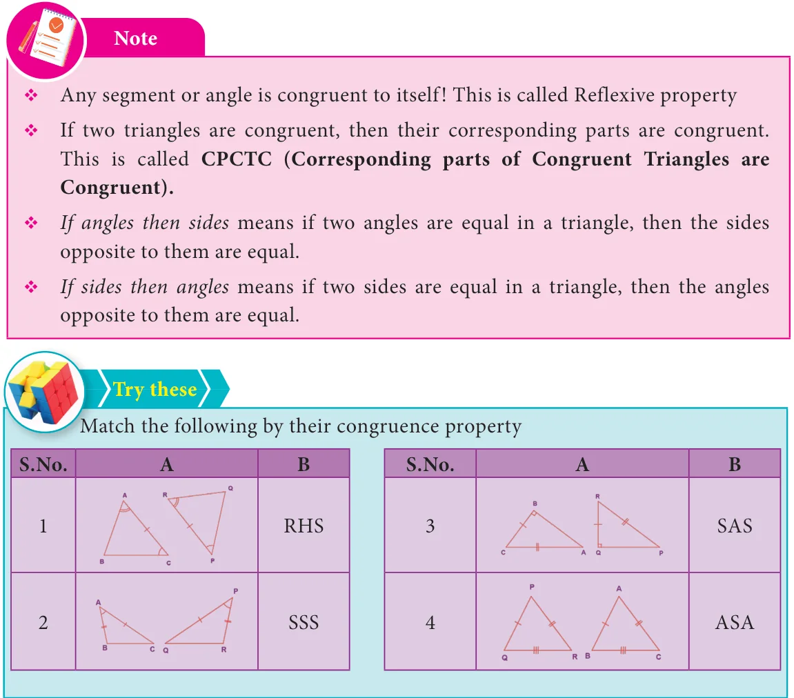
Example 5.1
Find the unknowns in the following figures
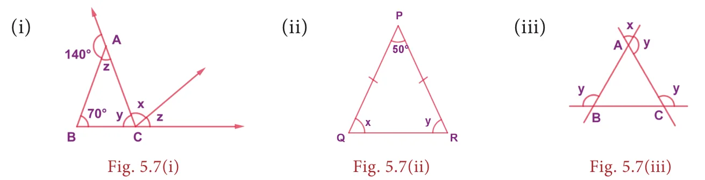
Solution:
(i) Now, from Fig. 5.7(i), \(140^{\circ} + z = 180^{\circ}\) (linear pair)
\(\Rightarrow z = 180^{\circ} - 140^{\circ} = 40^{\circ}\)
Also \(x + z = 70^{\circ} + z\) (exterior angle property)
\(\Rightarrow x = 70^{\circ}\)
Also \(z + y + 70^{\circ} = 180^{\circ}\) (angle sum property in \(\triangle ABC\))
\(\Rightarrow 40^{\circ} + y + 70^{\circ} = 180^{\circ}\)
\(\Rightarrow y = 180^{\circ} - 110^{\circ} = 70^{\circ}\)
(ii) Now, from Fig. 5.7(ii), \(PQ = PR\)
\(\Rightarrow \angle Q = \angle R\) (angles opposite to equal sides are equal)
\(\Rightarrow x = y\)
\(\Rightarrow x + y + 50^{\circ} = 180^{\circ}\) (angle sum property in \(\triangle PQR\))
\(\Rightarrow 2x = 130^{\circ}\)
\(\Rightarrow x = 65^{\circ}\)
\(\Rightarrow y = 65^{\circ}\)
(iii) Now, from Fig. 5.7(iii), in \(\triangle ABC\) \(\angle A = x\) (vertically opposite angles)
Similarly \(\angle B = \angle C = x\) (Why?)
\(\Rightarrow \angle A + \angle B + \angle C = 180^{\circ}\) (angle sum property in \(\triangle ABC\))
\(\Rightarrow 3x = 180^{\circ}\)
\(\Rightarrow x = 60^{\circ}\)
\(\Rightarrow y = 180^{\circ} - 60^{\circ} = 120^{\circ}\)
Example 5.2
(Illustrating SSS and SAS Congruence)
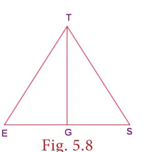
If \(\angle E = \angle S\) and \(G\) is the midpoint of \(ES\), prove that \(\triangle GET \equiv \triangle GST\).
Proof:
| Statements | Reasons | |
|---|---|---|
| 1 | \(\angle E \equiv \angle S\) | given |
| 2 | \(ET \equiv ST\) | if angles, then sides |
| 3 | \(G\) is the midpoint of \(ES\) | given |
| 4 | \(EG \equiv SG\) | follows from 3 |
| 5 | \(TG \equiv TG\) | common side (reflexive property) |
| 6 | \(\triangle GET \equiv \triangle GST\) | by SSS (2,4,5) & also by SAS (2,1,4) |
Think
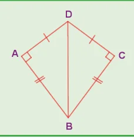
In the figure, \(DA = DC\) and \(BA = BC\).
Are the triangles \(DBA\) and \(DBC\) congruent? Why?
Example 5.3
(Illustrating ASA Congruence)
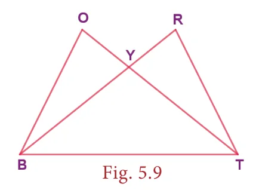
If \(\angle YTB \equiv \angle YBT\) and \(\angle BOY \equiv \angle TRY\), prove that \(\triangle BOY \equiv \triangle TRY\)
Proof:
| Statements | Reasons | |
|---|---|---|
| 1 | \(\angle BYO \equiv \angle TYR\) | vertical angles are congruent |
| 2 | \(\angle YTB \equiv \angle YBT\) | given |
| 3 | \(BY \equiv TY\) | if angles, then sides |
| 4 | \(\angle BOY \equiv \angle TRY\) | given |
| 5 | \(\angle OBY \equiv \angle RTY\) | follows from 1 and 4 |
| 6 | \(\triangle BOY \equiv \triangle TRY\) | by ASA (1,3,5) |
Example 5.4
(Illustrating RHS Congruence)
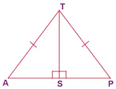
If \(TAP\) is an isosceles triangle with \(TA = TP\) and \(\angle TSA = 90^{\circ}\).
- Is \(\triangle TAS \equiv \triangle TPS\)? Why?
- Is \(\angle P = \angle A\)? Why?
- Is \(AS = PS\)? Why?
Proof:
TA = TP (hypotenuse) and \(\angle TSA = 90^{\circ}\)
TS is common (leg)
Hence, by RHS congruence, \(\triangle TAS \equiv \triangle TPS\)
Given TA = TP
\(\therefore \angle P = \angle A\) (If sides then angles)
From (i) \(\triangle TAS \equiv \triangle TPS\),
By CPCTC
\(AS = PS\)
Do you know?
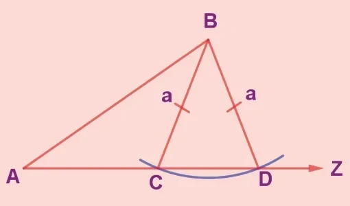
SSA and ASS properties are not sufficient to prove that two triangles are congruent. This is explained in the given figure. By construction, in triangles ABD and ABC, \(BC = BD = a\). Also, AB and \(\angle BAZ\) are common. But \(AC \neq AD\). So, \(\triangle ABD\) is not congruent to \(\triangle ABC\) and so SSA fails.
5.2.2 Similar Triangles
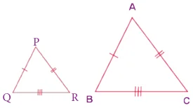
Consider two given triangles PQR and ABC. They are said to be similar \((\sim)\) if their corresponding angles are equal and corresponding sides are proportional. That is \(\angle P = \angle A\), \(\angle Q = \angle B\) and \(\angle R = \angle C\) and also \(\dfrac{PQ}{AB} = \dfrac{PR}{AC} = \dfrac{QR}{BC}\). This is denoted as \(\triangle PQR \sim \triangle ABC\).
There are 4 ways by which one can prove that two triangles are similar.
AAA (Angle - Angle - Angle) or AA (Angle - Angle) Similarity
Two triangles are similar if two angles of one triangle are equal respectively to two angles of the other triangle. In the given figure, \(\angle A = \angle P\), \(\angle B = \angle Q\). Therefore, \(\triangle ABC \sim \triangle PQR\).
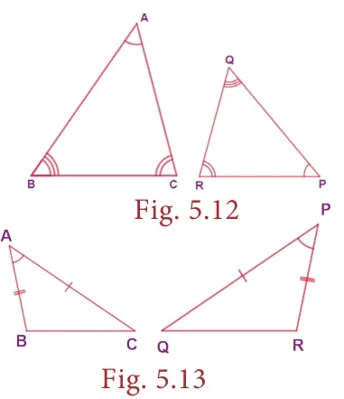
SAS (Side - Angle - Side) Similarity
Two triangles are similar if two sides of one triangle are proportional to two sides of the other triangle and the included angles are equal. In the given figure, \(\dfrac{AC}{PQ} = \dfrac{AB}{PR}\) and \(\angle A = \angle P\) and hence \(\triangle ACB \sim \triangle PQR\).
SSS (Side-Side-Side) Similarity

Fig. 5.14 Two triangles are similar if their corresponding sides are in the same ratio. That is, if \(\dfrac{AB}{PQ} = \dfrac{AC}{PR} = \dfrac{BC}{QR}\), then \(\triangle ABC \sim \triangle PQR\).
RHS (Right Angle - Hypotenuse - Side) Similarity
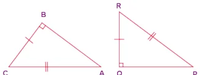
Fig. 5.15 Two right triangles are similar if the hypotenuse and a leg of one triangle are respectively proportional to the hypotenuse and a leg of the other triangle. That is, if \(\angle B = \angle Q = 90^{\circ}\) and \(\dfrac{AC}{PR} = \dfrac{BC}{QR}\) then, \(\triangle ABC \sim \triangle PQR\).
Do you know?
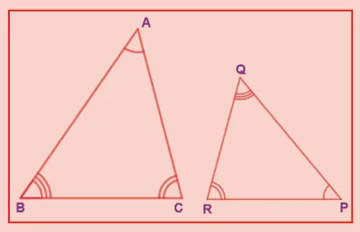
If \(\triangle ABC \sim \triangle PQR\), then the corresponding sides to \(AB\), \(BC\) and \(AC\) of \(\triangle ABC\) are \(PQ\), \(QR\) and \(PR\) respectively and the corresponding angles to A, B and C are P, Q and R respectively. Naming a triangle has a significance. For example, if \(\triangle ABC \sim \triangle PQR\) then, \(\triangle BAC\) is not similar to \(\triangle PQR\).
Example 5.5
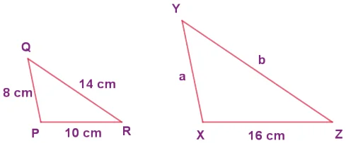
In the Fig. 5.16, if \(\triangle PQR \sim \triangle XYZ\), find \(a\) and \(b\).
Solution:
Given that \(\triangle PQR \sim \triangle XYZ\)
\(\therefore\) Their corresponding sides are proportional.
\(\Rightarrow \dfrac{PQ}{XY} = \dfrac{QR}{YZ} = \dfrac{PR}{XZ}\)
\(\Rightarrow \dfrac{8}{a} = \dfrac{14}{b} = \dfrac{10}{16}\)
\(\Rightarrow \dfrac{8}{a} = \dfrac{10}{16}\)
\(\Rightarrow a = \dfrac{8 \times 16}{10} = \dfrac{128}{10}\)
\(a = 12.8\) cm
Also, \(\dfrac{14}{b} = \dfrac{10}{16}\)
\(\Rightarrow b = \dfrac{14 \times 16}{10} = \dfrac{224}{10}\)
\(\therefore b = 22.4\) cm
Note
- All circles and squares are similar to each other.
- Not all rectangles need to be similar always.
- If two angles are both congruent and supplementary then, they are right angles.
- All congruent triangles are similar.
- The symbol \(\sim\) is used to denote similarity.
Example 5.6
(Illustrating AA Similarity)
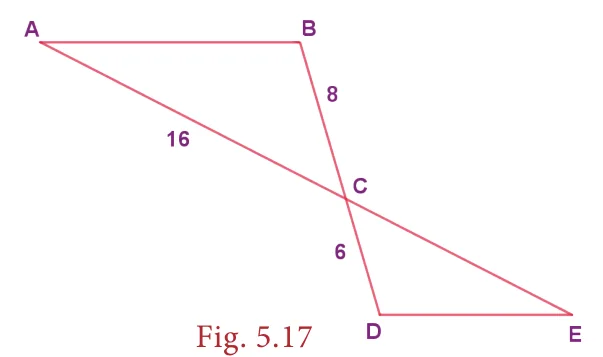
In the Fig. 5.17, \(\angle ABC \equiv \angle EDC\) and the perimeter of \(\triangle CDE\) is 27 units, prove that \(AB \equiv EC\).
Proof:
| Statements | Reasons | |
|---|---|---|
| 1 | \(\angle ABC \equiv \angle EDC\) | given |
| 2 | \(\angle BCA \equiv \angle DCE\) | vertically opposite angles are equal |
| 3 | \(\triangle ABC \sim \triangle EDC\) | by AA property (1, 2) |
| 4 | \(\dfrac{AB}{ED} = \dfrac{BC}{DC} = \dfrac{AC}{EC}\) | corresponding sides are proportional by 3 |
\(\Rightarrow \dfrac{8}{6} = \dfrac{16}{EC} \Rightarrow EC = 12\) units
Given, the perimeter of \(\triangle CDE = 27\) units,
\(\therefore ED + DC + EC = 27 \Rightarrow ED + 6 + 12 = 27 \Rightarrow ED = 27 - 18 = 9\) units
\(\therefore \dfrac{AB}{9} = \dfrac{8}{6} \Rightarrow AB = 12\) units and hence \(AB = EC\).
Example 5.7
(Illustrating AA Similarity)
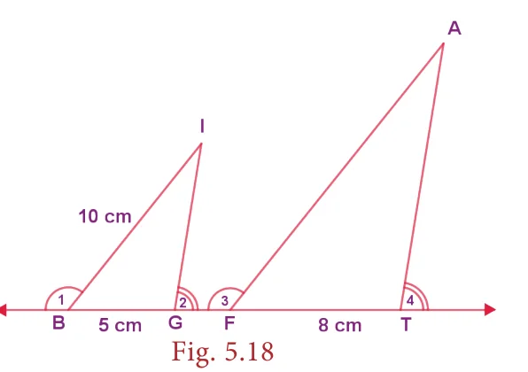
In the given Fig. 5.18, if \(\angle 1 \equiv \angle 3\) and \(\angle 2 \equiv \angle 4\) then, prove that \(\triangle BIG \sim \triangle FAT\). Also find FA.
Proof:
| Statements | Reasons | |
|---|---|---|
| 1 | \(\angle 1 \equiv \angle 3\) | given |
| 2 | \(\angle IBG \equiv \angle AFT\) | supplements of congruent angles are congruent. |
| 3 | \(\angle 2 \equiv \angle 4\) | given |
| 4 | \(\angle IGB \equiv \angle ATF\) | supplement of congruent angles are congruent |
| 5 | \(\triangle BIG \sim \triangle FAT\) | by AA property (2, 4) |
Also, their corresponding sides are proportional
\(\Rightarrow \dfrac{BI}{FA} = \dfrac{BG}{FT} \Rightarrow \dfrac{10}{FA} = \dfrac{5}{8} \Rightarrow FA = \dfrac{10 \times 8}{5} = \dfrac{80}{5} = 16\) cm
Example 5.8
(Illustrating SAS Similarity)
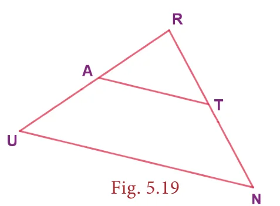
If A is the midpoint of \(RU\) and T is the midpoint of \(RN\), prove that \(\triangle RAT \sim \triangle RUN\).
Proof:
| Statements | Reasons | |
|---|---|---|
| 1 | \(\angle ART = \angle URN\) | \(\angle R\) is common in \(\triangle RAT\) and \(\triangle RUN\) |
| 2 | \(RA = AU = \dfrac{1}{2}RU\) | A is the midpoint of \(RU\) |
| 3 | \(RT = TN = \dfrac{1}{2}RN\) | T is the midpoint of \(RN\) |
| 4 | \(\dfrac{RA}{RU} = \dfrac{RT}{RN} = \dfrac{1}{2}\) | the sides are proportional from 2 and 3 |
| 5 | \(\triangle RAT \sim \triangle RUN\) | by SAS (1 and 4) |
Example 5.9
(Illustrating SSS similarity)
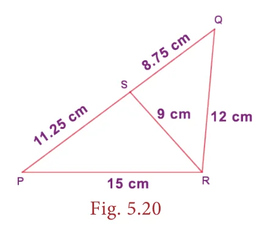
Prove that \(\triangle PQR \sim \triangle PRS\) in the given Fig. 5.20.
Solution:
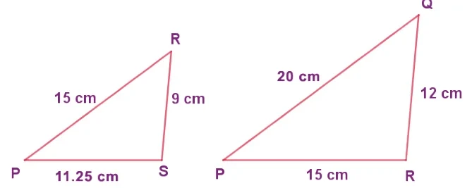
Now, \(\dfrac{PQ}{PR} = \dfrac{20}{15} = \dfrac{4}{3}\)
\(\dfrac{PR}{PS} = \dfrac{15}{11.25} = \dfrac{4}{3}\)
Also, \(\dfrac{QR}{RS} = \dfrac{12}{9} = \dfrac{4}{3}\)
We find \(\dfrac{PQ}{PR} = \dfrac{PR}{PS} = \dfrac{QR}{RS}\)
That is, their corresponding sides are proportional.
\(\therefore\) By SSS Similarity, \(\triangle PQR \sim \triangle PRS\)
Example 5.10
(Illustrating RHS similarity)

The height of a man and his shadow form a triangle similar to that formed by a nearby tree and its shadow. What is the height of the tree?
Solution:
Here, \(\triangle ABC \sim \triangle ADE\) (given)
\(\therefore\) Their corresponding sides are proportional (by RHS similarity).
\(\therefore \dfrac{AC}{AE} = \dfrac{BC}{DE}\)
\(\Rightarrow \dfrac{12}{96} = \dfrac{5}{h}\)
\(\Rightarrow h = \dfrac{5 \times 96}{12} = 40\) feet
\(\therefore\) The height of the tree is 40 feet.
Activity
The teacher cuts many triangles that are similar or congruent from a card board (or) chart sheet. The students are asked to find which pair of triangles are similar or congruent based on the measures indicated in the triangles.